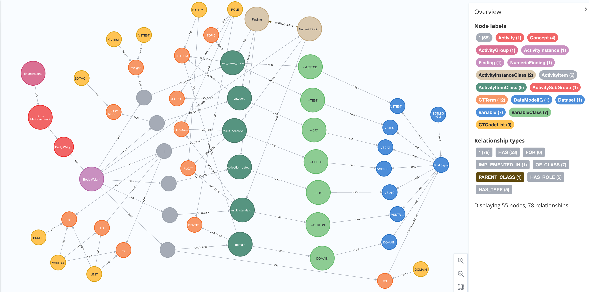
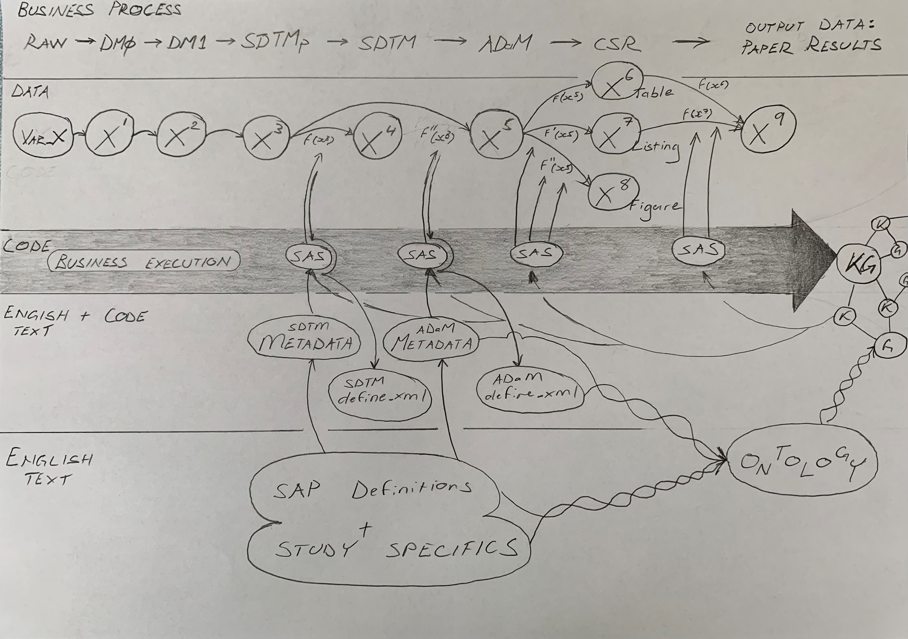

How Generative AI and Knowledge Graphs Will Transform Clinical Trial Programming
2024-05-24
Disclaimer
Neither I nor my employer receive any payment or benefits from Verisian.
The written and expressed views in this presentation are entirely those of the presenter; they are not intended to be representative of my employer, Bayer Aktiengesellschaft.
Contents
I. Introduction
II. Inflection [pivot]
III. Building the Future: upgrade the engine while the car is driving
I. Introduction [context]
Why are we here?
To communicate our quantitative measures of therapy safety and efficacy in patients to third parties for evaluation of health value.
To change for the better how we do this.
This is personal
Statistical Programming Analyst:
Surya [SAS ninja]
Image credit: https://easy-peasy.ai/
This is personal
Statistical Programming Analyst:
Surya [SAS ninja]
Works with a mountain of SAS code…
Image was created with the assistance of DALL·E 2
This is personal
Statistical Programming Analyst:
Surya [SAS ninja]
Works with a mountain of SAS code…
To deliver a Clinical Study Report

Image was created with the assistance of DALL·E 2
Surya’s Challenges in 2024
Legacy Processes: 2024 or 1994? [as-is]
- Data Storage
- Data Transformation
- Processes: the solo programmer & double programming
- Silo everything: challenges unique to the Domain (data privacy):
Data and code and tools are closed source
Learn from the best
The software dev / tech industry
[to-be]
- Version control: code and data
- Agile development methods: collaboration and iteration
- Openish source: democratize the tools and processes that we use to make money with, not from. SAS macros anyone?
And make our data accessible to anyone who can add value: data scientists, shareholders, regulators, at any-time, any-how. Blockchain anyone?
II. Inflection
[pivot]
Impediments to change
- Incumbents: legacy technologies and infrastructure
- Mindset: lethargic and closed [source]
- Generation change
- Existant SAS code: highly complex
- Motivation
“Change happens when the pain of staying the same is greater than the pain of change” -Tony Robbins
What can and should we do today?
Accept the as-is:
a. Work with what we’ve got
b. Commit what’s need to change, i.e.
time, money and people.
Objective judgement, now, at this very moment. Unselfish action, now, at this very moment. Willing acceptance - now, at this very moment - of all external events. That’s all you need. -Marcus Aurelius
III. Building the Future: upgrade the engine while the car is driving
Get a handle on our data and code: overlay a semantic data model on existing data and code
- Data + Code: distilled to its essence it’s ETL, so let’s do it properly
- Previous efforts to build an ontology:
top down, from standards
Get a handle on our data and code: overlay a semantic data model on existing data and code

- Knowledge graphs add relationships or edges to data points or nodes
- This enables one to traverse the topology of the database
Image credit: https://novo-nordisk.gitlab.io, Novo Nordisk, OpenStudyBuilder
No free lunch
Building an ontology and semantic model for clinical trials is highly specialized and deeply labor intensive.
Image credit: https://novo-nordisk.gitlab.io, Novo Nordisk, OpenStudyBuilder
No free lunch
Building an ontology and semantic model for clinical trials is highly specialized and deeply labor intensive.
If we want to be faster we’ll need a different approach:
Build it bottom up, from the code.
Not only faster, there’s more…
How bottom up?

- top down places human text at the top of the process, defining standard ontologies etc.
- bottom up places executed machine code at the top, of the process, form which standards are defined
Bottom up Knowledge Graphs: underpin a sematic data model on existing data and code
- Not lost in translation: code is the business execution that delivers value (not the so much the other stuff)
- Works with all previous and current code
change the wheels while the car is driving - Machines parse the code and deterministically extract all process logic
Deterministically read machine parsed code
- deterministic vs probablistic
- Fully automate the graph creation
change the engine while the car is driving - 100% explainable, no halucinations
- Universal code logic extraction
Single source of truth feeds other processes
- Documentation creation: definitions and descriptions for humans
- Translate to other languages: R, Python
break out of the SAS minima 👋 - Breaking changes: end-to-end tracability with a complete dependency map
But wait, won’t LLMs deliver our golden future (and replace humans)?
- In short no, because they are probabilistic; determinism is at the heart of drug development
especially for back translation - But they will be valuable for support tasks
LLMs will accelerate human efforts
(nothing new, but let’s run through the existing list)
- Draft text creation, e.g. CSR
- Draft code documentation
- Draft code creation
- Natural language interface to tabular and relational database stores
- Synthetic data creation (to liberate clinical data from silos)
Summary
- The challenges communicating clinical trial outcomes to authorities have exceeded our industries existing capabilities
- We have both the motivation and the tools to address this
- Weaving clinical trials into knowledge graphs supports a huge yet achievable advance for all stakeholders
- Automated knowledge-graph generation from code allows us to upgrade processes [engine and wheels] on the fly, no tools required
- LLMs are finding many use-cases outside those requiring full explainability
Acknowledgements
- Tomas Sabat Stöfsel and the entire Verisian Team
- Slide theme by Emil Hvitfeldt https://emilhvitfeldt.com
Q&A
- Find me: https://www.linkedin.com/in/karlbrand/
- This presentation: https://github.com/karlbrand/verisian-webinar
https://github.com/karlbrand/verisian-webinar